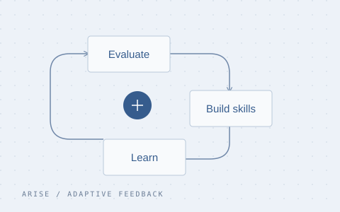
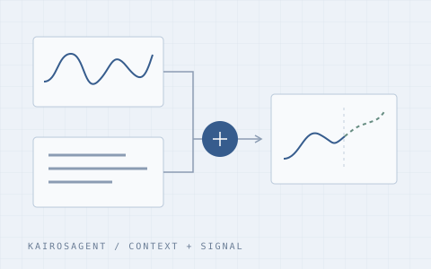

ARISE: Adapting to Evolving Capability Gaps in Agentic Reinforcement Learning
Adapting evaluation rubrics, reusable skills, and training priorities as an agent's capabilities evolve.
Project Agentic reinforcement learning
COMPUTER SCIENCE · SHANGHAITECH UNIVERSITY
Language models, learning agents,
and the questions in between.
I'm a senior undergraduate in Computer Science at ShanghaiTech University, graduating in 2027. I work on LLMs and agents, with interests in evaluation and multimodal time series forecasting.
I'm interested in how agents learn from feedback, how language can inform numerical predictions, and how we can tell when a model's answers deserve our confidence.
ARISE — our work on adapting agentic learning to evolving capability gaps is now online.
KairosAgent was accepted to EMNLP 2026 Main Conference.
Learning, reasoning,
and reliable evaluation.

Adapting evaluation rubrics, reusable skills, and training priorities as an agent's capabilities evolve.

Bringing semantic reasoning and numerical forecasting together through an agentic approach.
* Equal contribution. My name is highlighted in the author lists.
I'm exploring how the predictability of a time series and the quality of its textual context relate to forecasting error and model confidence.
Education, teaching,
and things I've built.
Undergraduate · Computer Science and Technology
Expected graduation: 2027
Teaching Assistant · ShanghaiTech University
Programming support, assignment discussions, and debugging.
Projects and coursework in Go backend development, C++ game development, and RISC-V. I've also participated in the GeekPie community.
ASC Student Supercomputer Challenge Second Prize
China Undergraduate Mathematical Contest in Modeling Shanghai · Third Prize
A place to work
through ideas.